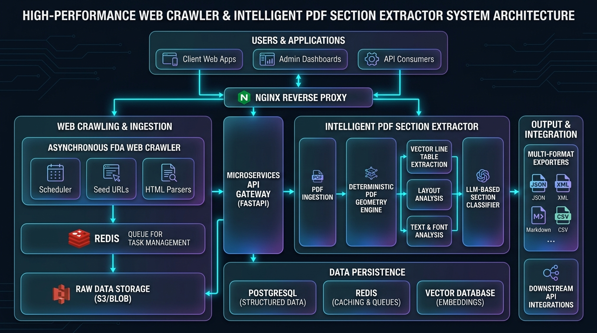

Unified Enterprise System Architecture (C4 Level 2)
Complete edge-to-storage diagram connecting Client Apps, Reverse Proxy, FastAPI Microservices, and Persistence Engines.
Subsystem A: FDA Regulatory Web Crawler & Scraper Pipeline
Detailed data ingestion pipeline from government ColdFusion servers to versioned SQL storage.
Subsystem B: Intelligent PDF Section Extractor Pipeline
The 10-step deterministic geometric compiler extracting hierarchical sections without LLMs.
Intra-Page Sibling Cutoff Simulator
Visualizing how the engine extracts Section 16.1 and stops strictly before 16.2 on the exact same physical page.
16. Signal and Risk Evaluation
This section presents safety evaluations conducted during the reporting period from clinical and post-marketing surveillance.
16.1 Summary of Safety Concerns
Table 16.1 summarizes cumulative important identified and potential risks observed during the surveillance period.
| Risk Category | Identified Term | Cumulative (N) | Reporting Frequency |
|---|---|---|---|
| Important Identified | QT Prolongation | 42 | 0.03% |
| Important Potential | Tendonitis / Tendon Rupture | 18 | 0.01% |
16.2 Signal Evaluation
Detailed narrative evaluations for signals closed or ongoing during the period under review...
Why Other Tools Fail & How Ours Succeeds
❌ The LLM & Naive Regex Failure
LLMs and naive page-splitters operate at the page level. Because Section 16.1 and Section 16.2 share Page 42, an LLM or page extractor either dumps all of 16.2 into the output or hallucinates where the boundary ends.
✅ Our Coordinate-Level Mathematical Slicer
Our engine parses every text span into its exact Cartesian bounding box: (x0, y0, x1, y1). When the heading detector matches sibling 16.2 at y0 = 612.8pt, it truncates immediately. No subsequent bytes are read.
if has_started and b.is_heading and b.section_number == stop_section_num:
excluded_sections.add(stop_section_num)
break # Immediate termination
High-Resolution Architecture Infographic
Rendered overview of the system architecture blocks and component hierarchy.
